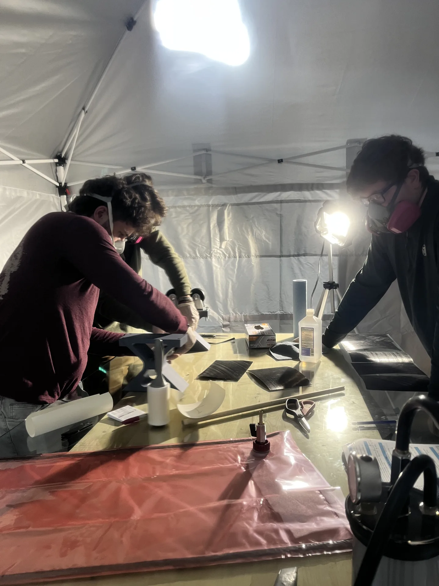
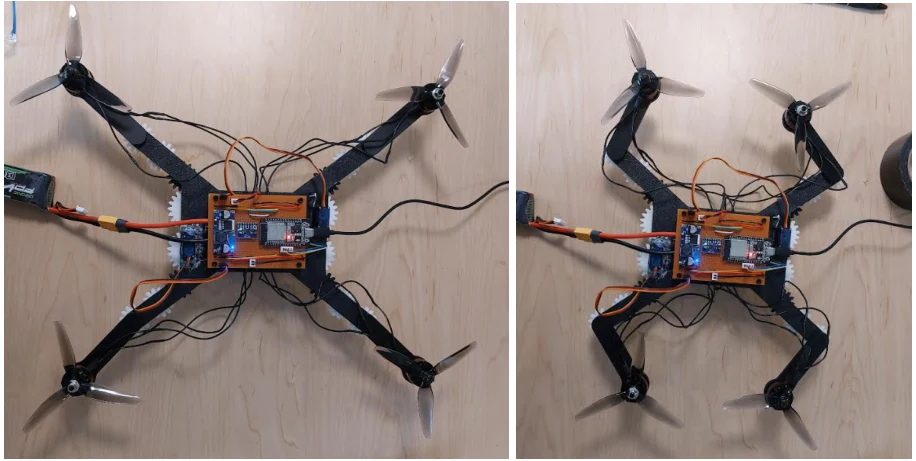
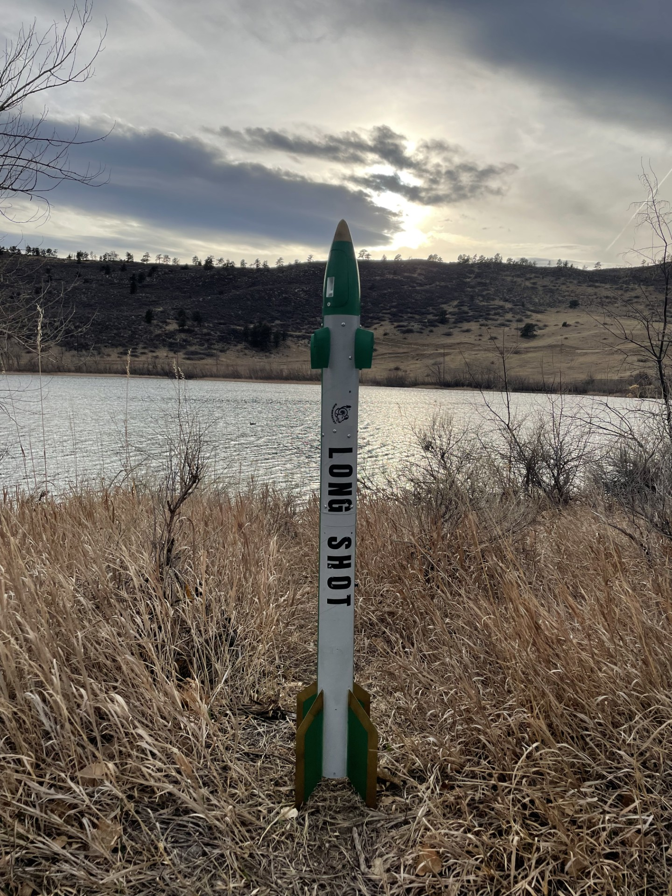
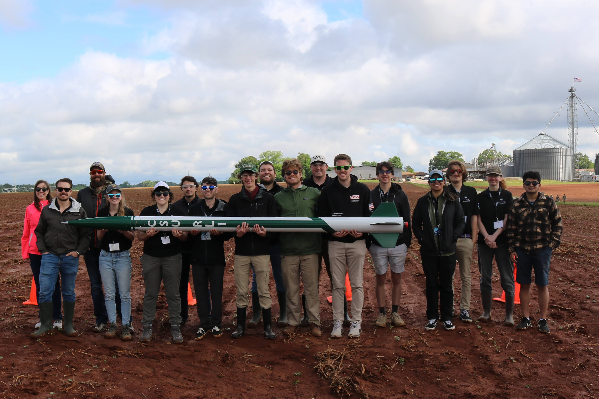
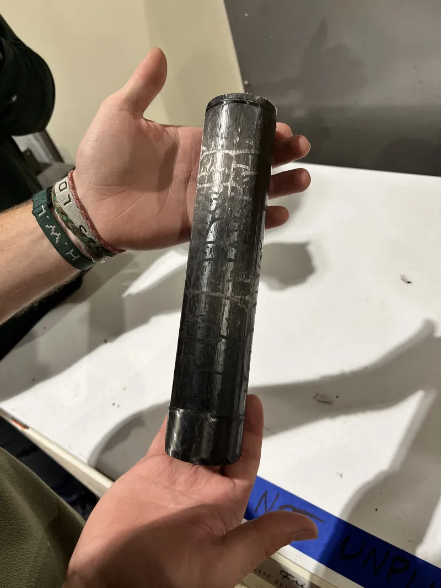
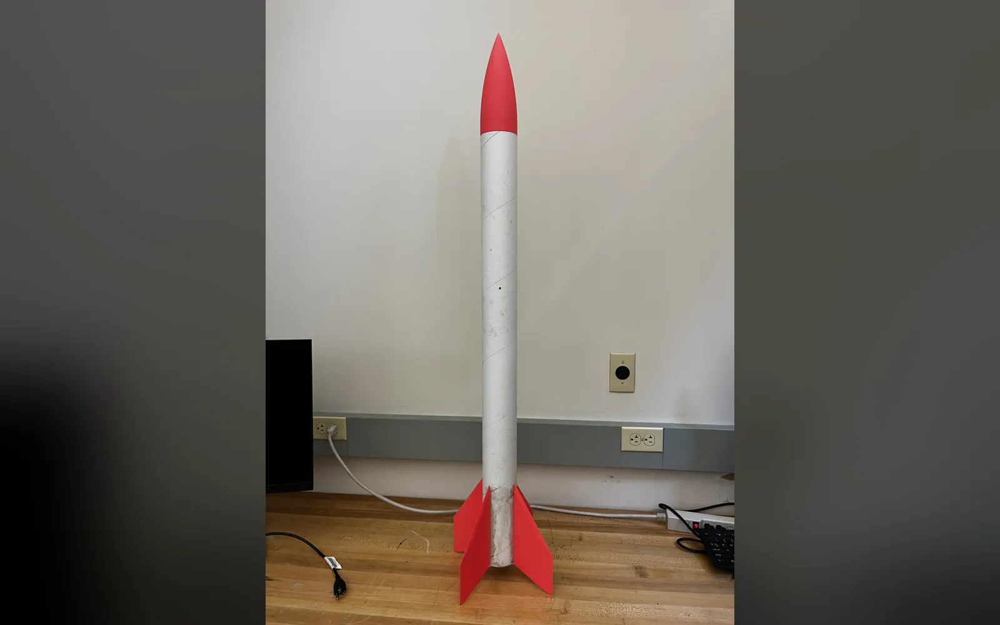
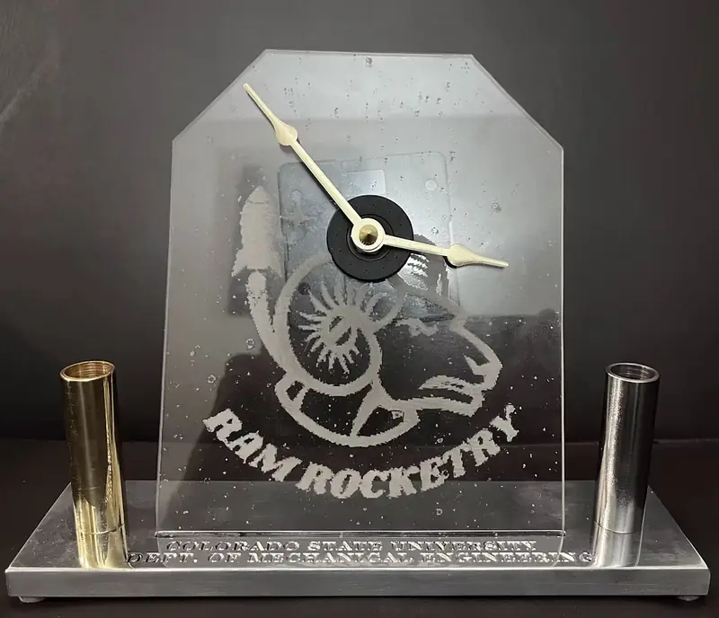
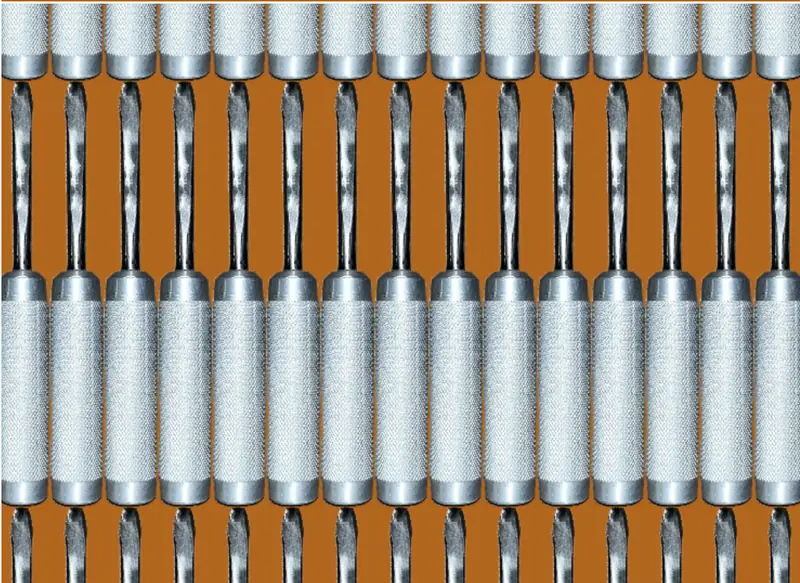
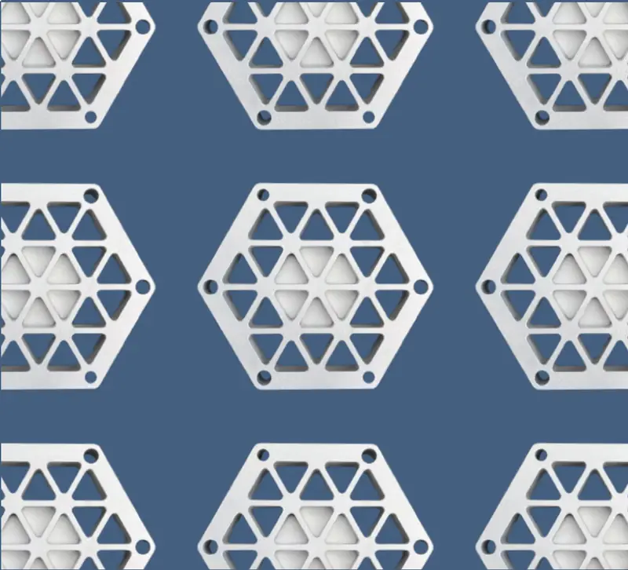
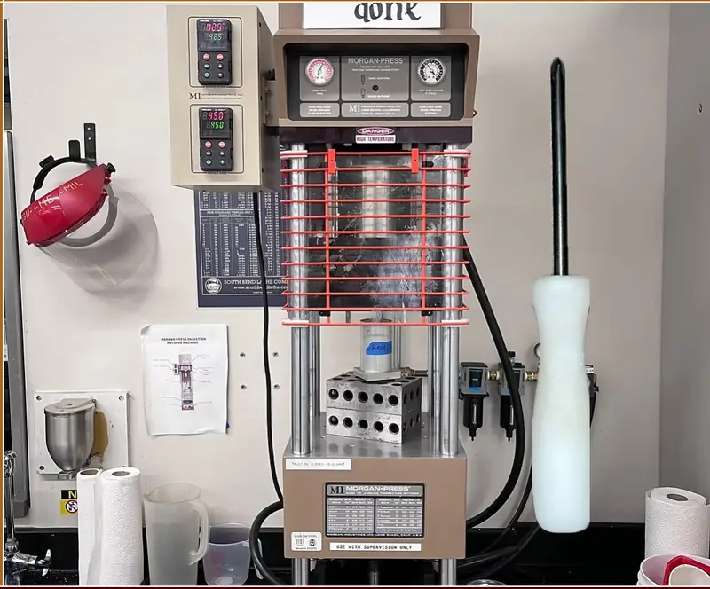

Engineering portfolio
Projects
Start with the flagship case studies for the most complete design, controls, integration, and test work. Additional engineering work follows as a compact archive.
Flagship case studies
Full project narratives with design decisions, technical evidence, and test results.

Bighorn: IREC 2027 Competition Rocket Chief Engineer for CSU's 10,000 ft IREC rocket: SRAD prepreg carbon fiber airframe, laminate analysis, layup tooling, airbrake control, a PDR compliance audit, and building the team that flies it.
Variable Geometry Drone Embedded flight controls, wireless commands, attitude estimation, motor control, and test-stand tuning for a reconfigurable quadcopter.
Active Fin Stabilization Rocket A high-power rocket developed to test active aerodynamic control using four servo-actuated fins, onboard inertial sensing, and a custom flight-control system.
NASA University Student Launch Payload Bay Specialist for Colorado State University’s NASA Student Launch team, responsible for the mechanical and electronics integration of the rocket’s payload assembly through the competition design cycle.
Additional engineering work
Controls, analysis, composites, and manufacturing projects.

Prepreg Carbon Fiber Test Airframe Small-scale prepreg carbon fiber tube for the CSU IREC team, used to prove out layup, vacuum bagging, oven cure, and freezer-assisted demold before full-scale airframe work.
R1 Kit: L1 Certification Rocket The rocket that earned my NAR Level 1, built from Ram Rocketry's 3D-printed R1 kit, which cut the cost of an L1 by about 50% using the campus 3D printing lab. PID Motor Control with Simulink Single-axis control modeling, PID response, motor mixing, and geometry-dependent roll dynamics in Simulink.
Machined Desk Clock A multi-part machining project using manual turning, milling, CNC operations, tolerance control, and process planning.
Forged Screwdriver CNC turning, knurling, forging, heat treatment, grinding, and fixture/process improvement.
CNC Machined Coaster HAAS CNC certification project covering setup, tooling, G-code execution, finishing, and fixturing.
Injection Molded Screwdriver Hands-on polymer injection molding using a Morgan-Press machine and a repeatable mold-based workflow.